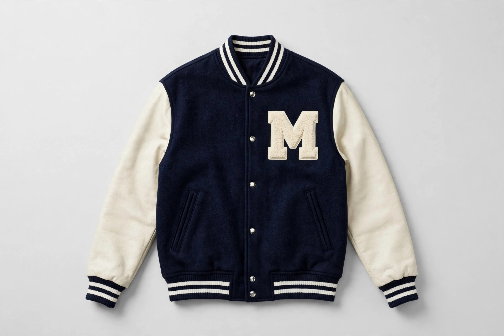

A varsity jacket is a date before it is a jacket. The drop has a day on the calendar, the team has a first game, the shop has an autumn window, and the whole order runs backwards from that day. As a custom varsity jacket manufacturer in Sialkot, Pakistan, we make these jackets for streetwear labels, clubs and shops, and the orders that go smoothly are almost always the ones that started with the date, not with the design.
This guide follows one jacket through the season, month by month, the way we actually build it. If your drop is in September, the work starts in February. That sounds early. It is not, and the rest of this guide is the reason why.

Varsity jackets sell in autumn and winter. Nobody buys a heavy wool jacket in June, and no team wears one in July, so the selling season is short and every brand realises it at the same time. The labels that have jackets on the rail in September sent their designs in February or March. The ones that email in August get a polite answer and a later date, because by then the factory calendar is full of the people who started early.
Count backwards from your drop and the calendar fills itself in. Sampling takes 7–10 working days once we have your design. Bulk production follows, and a first order with leather sleeves takes longer than a plain wool piece because the leather is prepared for your custom order. Then shipping to North America or Europe, by air or by sea. Add a week of slack for the correction you will want after seeing the sample, because there is always one. Start in February and September is comfortable. Start in June and you are already negotiating with the calendar instead of with us.
The body is the jacket. Heavy melton wool, in the colour your brand owns, and it carries almost everything: the colour, the weight, the way the jacket hangs, the way the patch sits on it. A good body makes an ordinary patch look expensive. A thin or shiny body makes the best chenille look cheap, and no sleeve leather in the world fixes that.
Most buyers get this wrong in the same way. They spend a week choosing the sleeve leather and ten minutes on the body colour, then wonder why the finished jacket looks nothing like the picture they had in mind. In our experience, the body colour is the decision to take slowly. Navy, black, forest green, burgundy, cream: pick the colour your customer already wears, not the colour that looked good on a screen at midnight. Wool reads darker in the factory than it does on your phone, so ask for the fabric swatch and look at it in daylight. We send swatches before sampling for exactly this reason, and the brands that ask for them are the ones that never argue about colour later.
Then the sleeves. Real leather, in a colour that sits next to the wool without fighting it. Cream against navy, black against grey, tan against green. The sleeve is where a large part of the cost sits and where the customer’s hand goes first when they pick the jacket up, so it is worth choosing properly. Our leather production is fully in-house, which matters here more than anywhere else in the jacket, because the sleeve leather has to match the body wool in tone and the two materials age together. A sleeve bought in from somewhere else and stitched onto our body is a gamble on colour and on grain.
One thing worth knowing before you budget: a first leather order takes 25–35 days, because the leather is prepared for your custom order rather than pulled from stock. Repeat orders are faster. That is the main reason the calendar in the first section of this guide starts in February. The wool can wait. The leather cannot.
A varsity jacket without its patch is a bomber with ambition. The chenille letter, the embroidered crest, the tackle twill name across the back: this is the part that makes the jacket yours, and it is also the part buyers leave until last, which is a mistake. Chenille is made to order, in your letter, your colours, your size. It cannot be rushed at the end of the process without paying for the rush or accepting a compromise.
Decide the artwork in April, while the body and sleeves are still being settled, and three questions answer themselves. How big should the letter be? Big enough to read from across a room, small enough that it does not swallow the chest. Where does it sit? Left chest is the classic spot, centre chest is bolder, and the back is for the name or the year. And what does it sit on? Chenille on wool holds beautifully. Embroidery on the sleeve works, but keep it small, because a sleeve moves and a large embroidery does not. Send the artwork with the design, not after it, and the patch arrives when the jacket needs it instead of a week later.
Sampling takes 7–10 working days after we have your design or tech file, and then the sample is in your hands. This is the week the order is really decided, whatever the paperwork says. Judge it the way a customer would: put it on, sit in it, snap it and unsnap it, check the weight on your shoulders. A sample that only looks right on a hanger has not been checked at all.
I still check every varsity sample the same way, and it has not changed in years. I hold it up by the shoulders and look at the line of the snap buttons first, because a crooked snap line is the first thing a customer notices and the last thing anyone checks. Then I pull the ribbed cuff gently and let it spring back, and I run a thumb along the seam where the leather sleeve meets the wool body, feeling for the one place the stitching went shallow. The chenille patch gets a look from the side, not from the front, because that is where you see whether it sits flat or lifts at the edge. None of this takes more than two minutes, and it catches almost everything that would have become a complaint later. Do the same with your sample, and write down what you find while you are still holding it. Small corrections now are a short message. The same correction after bulk production is a second order.
A streetwear label ordered forty jackets from us last season, their first bulk order after a sample they loved. The sample was right in every way we could measure. The bulk run was right too, except for one thing: the ribbed waistband on the production pieces was knitted a touch too tight, and the jacket rode up when worn. Not by much. Enough that a customer would notice it every time they reached for something.
We caught it because of the way small orders work here. One piece from the production run went to the buyer for checking while the rest of the run continued, and the buyer tried it on instead of just looking at the photograph. The knitting tension was corrected on the remaining pieces before they were finished. The lesson is a plain one, and it is the reason I write about the sample week the way I do: the sample proves the design, but only a piece from the actual run proves the run. Always check the bulk piece. Always wear it, not just photograph it.
By July the jacket is nearly yours. Your own brand label goes in, and your size tags, and your packaging if you sent it. If you ask for it, we can also add a "Made in [your country]" tag; otherwise our standard "Made in Pakistan" tag is used. This is the part that turns a well-made jacket into your brand’s jacket, and it costs nothing extra in time if the artwork arrived early. Send label artwork with the design, not with the bulk order, and it is ready when the jackets are.
The numbers at this point are simple. A trial order runs 15–50 pieces per style, which is enough to photograph properly, put on real customers and learn what sells before you commit to more. Quality is checked twice: in-line, while production is running, and again as a final inspection before packing, covering measurements, stitching, the patch, labelling and count. And you receive final quality-check photographs before anything is dispatched, so what arrives is what you approved. If a photograph shows a problem, say so then. After dispatch, the same problem costs a return.
You do not need a finished tech pack to begin. One design is enough, or a clear photograph of a jacket you like, or a reference sample you already own. Send it on WhatsApp at +92-339-5099397 or by email at safettech@outlook.com, and we will reply with an exact quote for that piece and a sampling plan. Tell us the date you need the jackets by as well as the design, so we can tell you honestly whether the date works. Or use our contact page to request a sample. If you want to see the rest of the range first, our streetwear & outerwear page shows what else we make to the same standard.

A varsity jacket is the one piece your customer will still be wearing in five years, so it is worth the months this guide asks for. Send me the design and the date you need it by, and I will tell you honestly whether the date works, and what it takes to make the jacket well.
Ahmed Zahid
Founder & Director, Safe-T TECH International · Sialkot, Pakistan
Send your design today — samples in 7–10 days, trial orders from just 15–50 pieces.